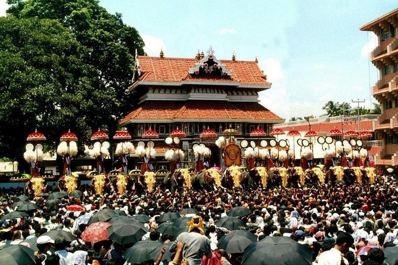
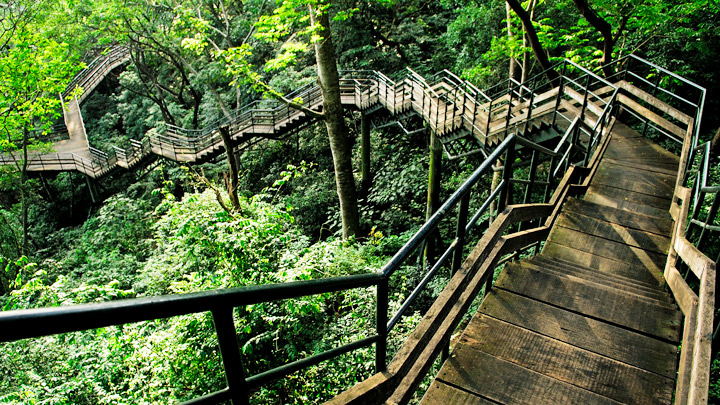

-

THRISSUR POORAM
The Thrissur Pooram is an annual temple festival held in Thrissur, Kerala, India. It is held at the Vadakkunnathan Temple in Thrissur every year on the Pooram day—the day when the moon rises with the Pooram star in the Malayalam Calendar month of Medam. It is the largest and most famous of all poorams in India.
-

THRISSUR CHAVAKKADU BEACH
Chavakkad Beach in Thrissur is famous for the Azhimukam, the confluence of the river and sea. Visitors throng here to observe this delightful phenomenon. It is a great place to swim and relax in a serene environment. The nearby lighthouse attracts frequent visitors as well. On the other side of the beach is Ramachapadam, a vast farmland of the Ayurvedic herb, Ramacham. The fish market available in the evening sees a huge crowd every day. It is among the best picnic spots in Thrissur.
-

PEECHI-VAZHANI ECO TOURISM
Chavakkad Beach in Thrissur is famous for the Azhimukam, the confluence of the river and sea. Visitors throng here to observe this delightful phenomenon. It is a great place to swim and relax in a serene environment. The nearby lighthouse attracts frequent visitors as well. On the other side of the beach is Ramachapadam, a vast farmland of the Ayurvedic herb, Ramacham. The fish market available in the evening sees a huge crowd every day. It is among the best picnic spots in Thrissur. The Peechi-Vazhani Wildlife Sanctuary is located in the district of Thrissur district. Started as an irrigation project, it offers many facilities for the tourists who come here. But to the adventurer in you, sitting on the periphery may not be the ideal way to appreciate the woods. Peechi offers many trekking trails for the courageous among you.
v